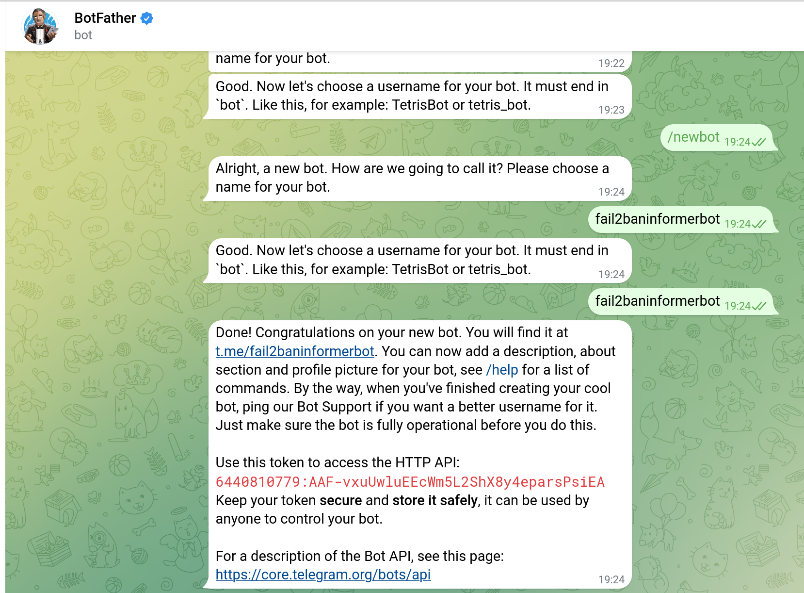

fail2ban i Telegram
Fail2ban
Fail2Ban és una eina de seguretat per a servidors Linux que ajuda a protegir contra atacs de força bruta. La seva principal funció és monitoritzar els fitxers de registre del sistema per detectar patrons específics relacionats amb intents d'inici de sessió fallits, i després pren accions com bloquejar temporalment l'adreça IP de l'origen d'aquests intents.
Aquí tens com instal·lar fail2ban en un sistema Ubuntu:
Actualitza el sistema:
Abans d'instal·lar nous paquets, és una bona pràctica actualitzar la llista de paquets disponibles i actualitzar els paquets ja instal·lats.
Instal·la Fail2Ban:
Utilitza el gestor de paquets apt per instal·lar fail2ban.
| Bash | |
|---|---|
Configuració bàsica de Fail2Ban:
Després de la instal·lació, fail2ban crea els seus fitxers de configuració a /etc/fail2ban/. El fitxer principal és fail2ban.conf, i les regles específiques es configuren a través de fitxers de jail com jail.conf o jail.local.
| Bash | |
|---|---|
Configura Jail per a SSH (sshd):
Obrir el fitxer de configuració de jail local amb un editor de text. Pots utilitzar nano o qualsevol editor que prefereixis.
| Bash | |
|---|---|
Cerca la secció [sshd] i assegura't que estigui configurada per habilitar fail2ban per a SSH. Pots ajustar el valor de maxretry segons les teves preferències.
| INI | |
|---|---|
Guarda els canvis i tanca l'editor.
Inicia i habilita el servei Fail2Ban:
Inicia el servei Fail2Ban i habilita que s'executi al iniciar-se el sistema.
o
A partir d'aquest moment, Fail2Ban està monitoritzant els intents d'inici de sessió fallits a través del registre del sistema (en aquest cas, /var/log/auth.log per SSH) i pren accions com bloquejar temporalment les adreces IP que superin el límit especificat.
Pots revisar els registres i configurar més opcions mitjançant els fitxers de configuració de Fail2Ban. També pots crear regles personalitzades per altres serveis i protocols. La documentació oficial de Fail2Ban és un bon recurs per a més detalls i configuracions avançades: Fail2Ban Wiki.
Enviament notificacions
Crear bot de Telegram
Crear bot i grup
Has de crear un bot de telegram i un grup, i afegir el bot al grup per a realitzar la pràctica. Has d'obtindre el token del bot i l'identificador de la conversa per a configurar el script.
Crear un nou bot a Telegram és un procés senzill que es fa a través de Telegram amb l'ajuda del BotFather, un bot oficial de Telegram que permet crear i gestionar bots. Aquí tens els passos per crear un nou bot a Telegram:
Inicia una conversa amb el BotFather:
- Vés a la barra de cerca de Telegram i escriu "BotFather".
- Inicia una conversa amb el BotFather fent clic sobre ell i després fes clic a "Iniciar" o envia el missatge /start.
Crea un nou bot:
- Envia el missatge /newbot per començar el procés de creació d'un nou bot.
Proporciona un nom per el teu bot: - El BotFather et demanarà que li donis un nom per al teu bot. Escull un nom que sigui únic, ja que cada bot a Telegram ha de tenir un nom únic. Aquest nom també serà utilitzat com a nom d'usuari del bot.
Proporciona un nom d'usuari per al teu bot: - Després de triar el nom, el BotFather et demanarà que li donis un nom d'usuari pel teu bot. Aquest nom d'usuari ha de ser únic i acabar amb la paraula "bot" (per exemple, "example_bot"). El nom d'usuari és com s'identificarà el teu bot a Telegram.
Rebràs el token del teu bot: - Una vegada hagis completat els passos anteriors, el BotFather et enviarà un missatge amb el token del teu bot. Aquest token és una clau única que identifica el teu bot i que s'utilitzarà per a les comunicacions amb l'API de Telegram.
Guarda aquest token de manera segura, ja que el necessitaràs per programar o configurar el teu bot.
Ara has creat amb èxit un nou bot a Telegram. Pots començar a programar-lo i personalitzar-lo segons les teves necessitats. Per obtenir més informació sobre com interactuar amb l'API de Telegram i desenvolupar funcionalitats per al teu bot, pots revisar la documentació oficial de Telegram per als desenvolupadors: Telegram Bot API.

Exemple de script per a enviar un text per Telegram
Paràmetres del script
Es pot modificar el script per a que reba la IP bloquejada com a paràmetre per a comunicar-la.
Configurar per a executar un script
Afegir a l'arxiu /etc/fail2ban/jail.conf
Tabulació
Hi ha que tabular correctament telegram o no funcionarà!!
Crear l'arxiu /etc/fail2ban/action.d/telegram.conf
Carpeta scripts
Ubicar el script en la carpeta /etc/fail2ban/scripts i comprova que tinga permissos d'execució
Resposta de Telegram
T'aconselle que proves primer el script i comproves que envia correctament a telegram. Si és així, a més a més d'apareixer els missatges es crea un log en una estructura semblant a aquesta:
Funcionament
Si tot funciona correctament, quan es bloqueja una ip el bot de telegram es comunica.
Pots consultar el log del fail2ban en /var/log/fail2ban.log